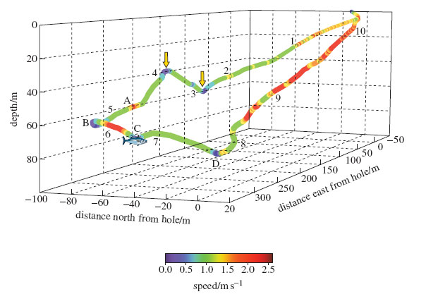

3 The ‘diving response’¶
All the aquatic mammals’ adaptations to life in the water – breathing, moving, staying warm and making sense of the environment – come together in their diving behaviour, and the diving abilities of marine mammals are truly awe-inspiring. This section will explore these adaptations.
3.1 Features of the diving response¶
The elephant seal (Figure 15(a)) makes repetitive, long-duration dives and some 80–95% of its time at sea is spent submerged. Its dives are of about 20 minutes duration on average, and the intervals at the surface are seldom more than about two minutes. This pattern is repeated almost continuously for between two and eight months. Such abilities are especially useful for those seals that often travel long distances under ice from one breathing hole to another – the Arctic-dwelling ringed seal is one such example and its Antarctic counterpart, the Weddell seal is another. The sperm whale (Figure 15(b)) routinely swims down to depths in excess of 1000 m to hunt giant squid and can stay submerged for over an hour.
Video 4 Elephant seals
DAVID ROBINSON: It’s late September and the windswept coast on the Peninsular Valdes in Patagonia is dotted with southern elephant seals. A male, readily identified by his large size and prominent proboscis, has hauled out onto the beach and will compete with other males to establish a harem. While ashore, females will give birth, but won’t feed until the pup is weaned. A male is eight to ten times the mass of a female and will spend 80% or more of his life at sea. Elephant seals can dive deep into the ocean in search of food and the deepest recorded dive is 2388 m.; |

Figure 15 (a) Southern elephant seal; (b) Sperm whale
The length of time a mammal can spend under water depends on the amount of oxygen it takes on board before a dive, as well as its ability to slow the rate at which it uses that oxygen once the dive is under way. It was not until the 1930s and 1940s that biologists began to understand the diving abilities of marine mammals. Work on captive seals making simulated dives in the laboratory – mainly Weddell seals and elephant seals – identified a number of physiological mechanisms that became known as the ‘diving response’, which is detailed below. Subsequent research involving monitoring animals in their natural environment has shown that the full diving response is necessary only in extremis, when the animal is pushed close to its physiological limits.
The main elements of the diving response are as follows:
The animal stops breathing (technically known as ‘apnoea’).
The heart rate slows very markedly – a condition termed ‘bradycardia’. Many seals can reduce their heart rate to about four beats per minute.
The blood pumped by the heart is diverted away from peripheral tissues and muscles to the oxygen-dependent heart, brain and other essential organs. In essence, the animal turns itself into a ‘heart-lung-brain’ machine.
The overall metabolic rate of the diving animal falls as some tolerant tissues – the gut and kidneys, for example – are starved of oxygen. The metabolic rate also falls as the temperature of peripheral tissues – the flippers or flukes, for example – moves closer to that of the surrounding water. (In general, the warmer a tissue, the greater its metabolic rate and subsequent demand for oxygen.) The countercurrent heat exchange ensures that the blood supply to these peripheral tissues is maintained even as tissue temperature falls (Figure 9(b)).
The animal swims in a slow and sustained manner, gliding along to conserve oxygen.
These adaptations allow the animal to make efficient use of the oxygen carried on the dive. Two other adaptations allow the animals to increase the amount of oxygen carried, providing what some biologists have called a ‘physiological scuba tank’:
Oxygen is stored by two proteins in the body: haemoglobin in the red blood cells, and myoglobin in the muscles. Diving mammals have exceptional quantities of both substances.
In some diving mammals, muscles in the spleen contract to squeeze out more oxygen-holding red blood cells when the animal dives. The spleen is also larger, allowing it to hold and release more red blood cells.
Perhaps surprisingly, the main elements of the diving response are not confined to aquatic mammals. A similar response is found in all mammals and most other air-breathing vertebrates, including reptiles and birds. The observation that the diving response seems to be ‘hard wired’ into all mammals has led to some debate about its wider purpose. It may be that it has a role in other situations in which the body has to cope with reduced levels of oxygen.
Question 3¶
Timing: Allow about 5 minutes
Question¶
Can you think of any circumstances in which the ability to withstand oxygen starvation might be of use to a terrestrial animal?
Answer¶
There are a number of possible situations, including vigorous exercise or oxygen starvation during birth. Of course, we are also mammals and we have our own diving response. Freedivers swim as deep as they can without the aid of scuba tanks. Most human beings can endure apnoea for one to two minutes and dive to a depth of 10–20 m. But it is possible to train to dive for longer periods. The current world freediving record holder, Herbert Nitsch, dived to 253.2 m in 2012. It is possible, with training, for a human to hold their breath for long periods, for example the 22 minutes that Stig Severinsen spent immersed in a tank in 2012. Freedivers can also reduce their heart rates to an amazing six beats per minute, which is not far away from the minimum of a diving seal.
3.2 Natural dives¶
The physiology of the diving response can be studied in the laboratory, but investigating the behaviour of a diving mammal in its natural environment can be more of a problem. However, modern physiological techniques have made it possible to record continuously physiological variables (such as heart rate) and information on depth and position during the spontaneous dives in the wild that are part of the animal’s normal behaviour. Most such findings show that the majority of an animal’s dives don’t approach the ‘Olympic record’ limits that represent maximum effort. For example, most Weddell seal dives were shorter than 20 minutes, and there is little evidence of profound adjustments in the heart and circulatory system during this time, or of the presence of lactic acid in the blood of these animals as they surface. Lactic acid is an important indicator of the onset of anaerobic metabolism (i.e. metabolism that doesn’t use oxygen). The production of lactic acid is a relatively inefficient way of releasing energy by the breakdown of simple sugars obtained from the diet. (In humans, lactic acid appears in the bloodstream during intense activity such as sprinting, when the supply of oxygen to the muscle cells isn’t sufficient to allow the oxidation of sugars in the ‘conventional’ way.)
Question 4¶
Timing: Allow about 5 minutes
Question¶
What do these observations suggest about the physiological events that accompany natural dives?
Answer¶
They suggest that a full-scale diving response is not typical of these shorter dives. If tissues were starved of oxygen, substantial levels of lactic acid would probably be evident in the blood, as anaerobic metabolism became established. The implication is that in shorter dives, the amount of oxygen carried by the Weddell seal (mainly in the blood, as we’ve seen) is sufficient to tide the animal over, without a sustained or profound diving response. But with natural dives of 45 minutes or so, anaerobic metabolism becomes much more significant and the selective re-routing of blood (together with bradycardia) becomes much more important.
What about hunting behaviour? To continue the same example, the Weddell seal spends most of its time hunting cod and other fish out of sight beneath the Antarctic ice.
Marine biologist Terrie Williams and her colleagues at the University of California have studied the hunting behaviour of Weddell seals by attaching recording equipment to animals captured near their feeding holes. The seals are fitted with video and audio recorders, plus monitors that note the animals’ depth, speed, compass bearing and flipper strokes. The seals are then released back into the sea. The information that the scientists receive allows them to construct a three-dimensional map of the dive that is tied to specific pieces of behaviour recorded by the video camera. The seals hunt in low levels of light and have to find, stalk and catch their prey while holding their breath.

Figure 16 A three-dimensional map of the dive of a Weddell seal. The numbers on the plot indicate elapsed time in minutes since the start of the dive, and point C is where the seal made contact with the fish. Speed is indicated on the scale at the bottom right of the dive map. If you try and read off the depth of the seal using the vertical axis, you’ll note that it doesn’t correspond exactly; we have reproduced the figure accurately from the original publication but it shows the difficulty of representing changes in three dimensions using only two dimensions!
Figure 16 shows a dive by an adult female Weddell seal. The dive lasted for 10 minutes 30 seconds, and the animal travelled a total of 760 m. About midway through the dive, at point C, the video footage revealed that the seal attacked a large Antarctic cod, approaching from behind and below its tail. Let’s look at what happened in more detail.
The seal started the dive with a few powerful strokes of its flippers. Water pressure would have quickly collapsed its lungs, making the seal denser than the surrounding water. The negatively buoyant animal could then have continued its descent with little effort. (The team have discovered that in pinnipeds and cetaceans, this effortless gliding minimises the effort expended by the animal while submerged.) The seal sank slowly to a depth of 51 m (marked by the right arrow), rose slightly to a depth of 33 m (marked by the left arrow), and then started a new descent, maintaining roughly the same bearing and speed. This course was taking it in the general direction of the fish.
At point A, some 23 m from the fish, the seal used a few large flipper strokes to change direction and speed, accelerating away from the fish at an angle of 58 degrees to its previous course. It then used a looping turn (point B) to bring it back towards – but beneath – the fish. It accelerated again towards the target but slowed just before contact was made. After the attack had failed, the seal did not pursue the fish but continued its descent for a while, before turning left (point D) and proceeding quickly back to the ice hole.
Question 5¶
Timing: Allow about 5 minutes
Question¶
The data gathered can tell us a lot about what happened, but little about why. We are still left with the problem of interpreting the sequence. Try this for yourself. For example, why might the seal have moved away from the fish at point A?
Answer¶
Here is one interpretation (and it is difficult, if not impossible, to prove). It’s possible that the initial descents and ascents on a constant bearing were a searching strategy. At point A, the seal spotted the cod a short distance away (remember the poor light). If it approached the fish head-on it would be seen quite quickly. The turns at points A and B allowed the seal to attack the fish from behind and below.
After accelerating out of the second turn, it pulled its flippers to its side and coasted towards its prey, which accounts for the deceleration recorded just before contact. The seal would be camouflaged against the darkness of the deep water and the fish would be silhouetted against the ice.
Optional activity¶
Timing: Allow about 30 minutes
Question¶
If you find this topic interesting, you have the opportunity to find out more from the original scientific paper by Terrie Williams and her colleagues that reported these findings to the scientific world. The language used in the paper is sometimes technical and assumes some familiarity on the part of the reader with specialist terminology and the use of recording techniques. But you don’t need to understand it all to get something from the paper. It contains much more information than the signficantly abbreviated description above, outlining the reasons the research work was undertaken, and providing a fuller account of the three brief encounters – from 57.4 hours of recording! The broader significance of these findings is discussed, with an emphasis on what was new and unexpected about these observations, and the potential of the technique for revealing more about the hunting behaviour of diving mammals. Click the following link to view the paper. Link to paper on hunting behaviour